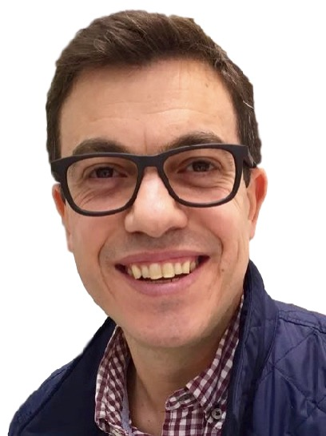
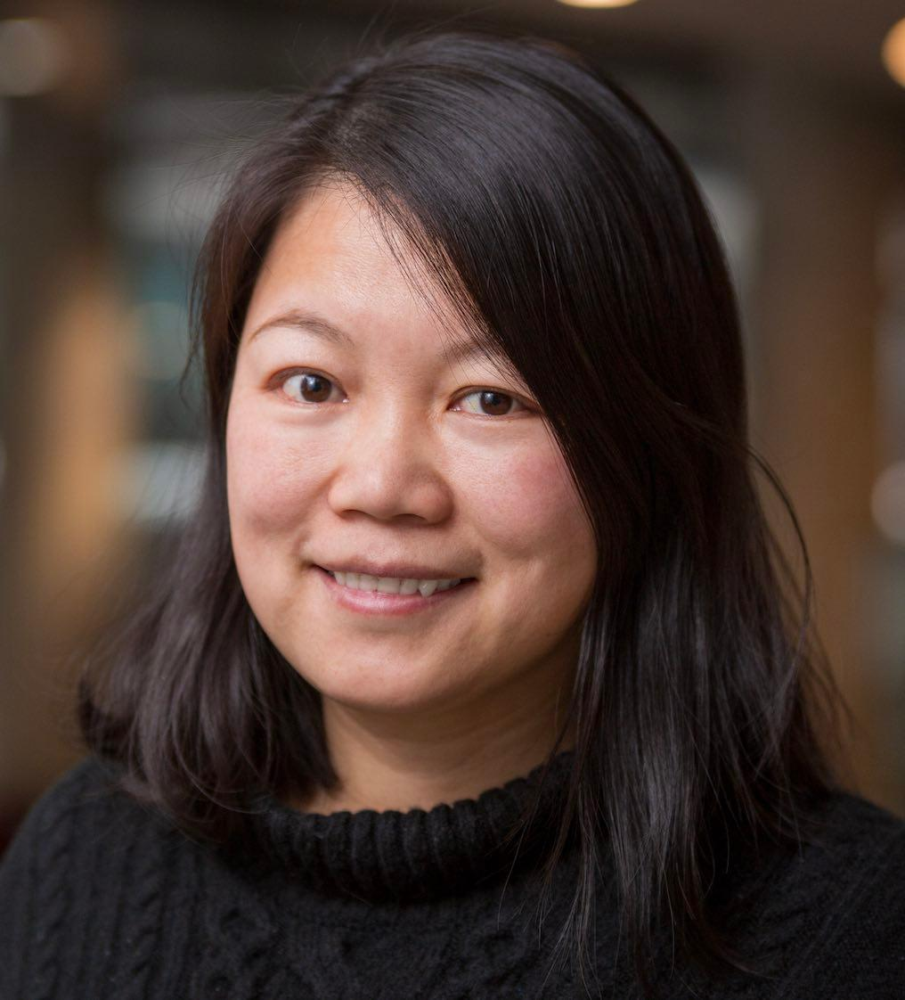
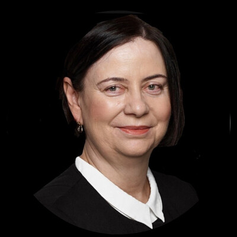
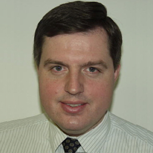
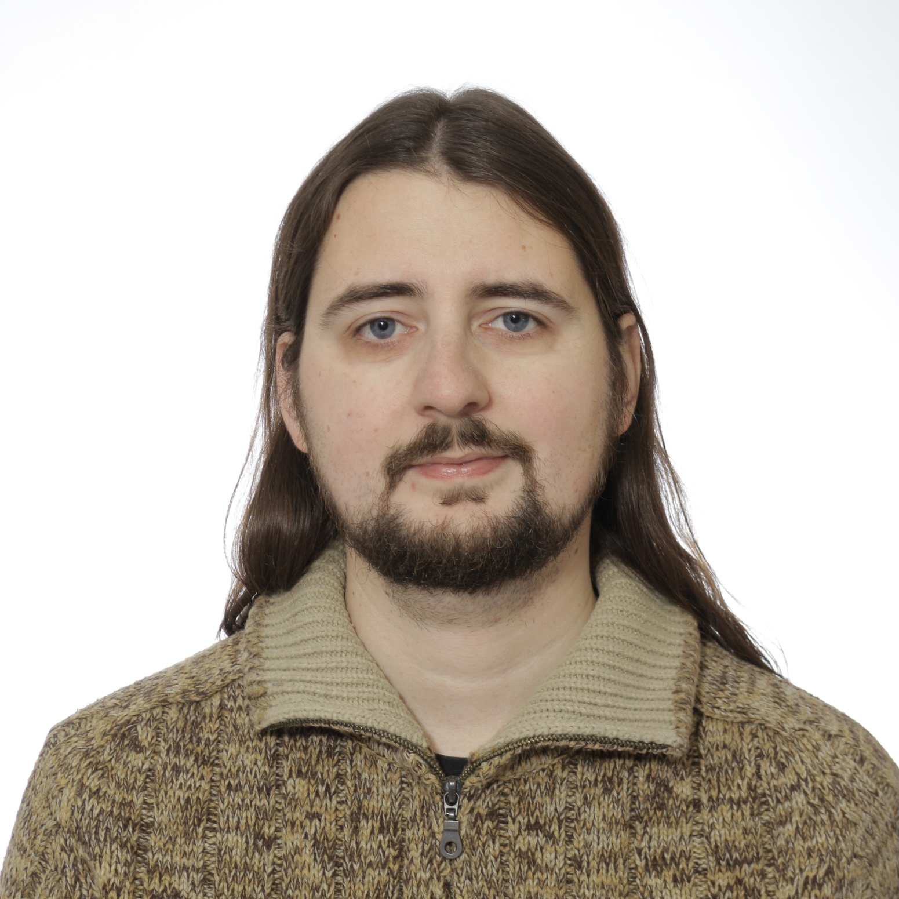

The theme of this year's CNSM 2024 is "AI-Powered Network and Service Management for Tomorrow's Digital World". This theme reflects the expectation that AI technology will make a lasting impact on the field of network and service management and take center stage in the coming years. However, this raises the question how this impact will manifest itself. For example, will AI lead mainly to greater operational efficiencies, or will AI help tackle previously unsolved problems and perhaps lead to entirely new categories of management functionality? Will the introduction of AI itself require new management approaches, from ways to dealing with uncertainties and nondeterminism to addressing issues of compliance and constraints imposed by regulation with regards to privacy? Will management protocols and data models need to evolve to become more "AI-ready"? Which areas are prone to setbacks where realities may not be able to keep up with expectations; which problems will remain despite advances in AI and which new challenges may emerge because of it?
 Luciano Paschoal Gaspary, Federal University of Rio Grande do Sul, Brazil, holds a Ph.D. in Computer Science (UFRGS, Brazil, 2002). He is currently Deputy Dean and Full Professor at the Institute of Informatics, UFRGS. From 2019 to 2022, he served as the Editor-in-Chief for Springer’s Journal of Network and Systems Management (JNSM). From 2008 to 2014, he worked as Director of the National Laboratory on Computer Networks (LARC) and, from 2009 to 2013, was Managing Director of the Brazilian Computer Society (SBC). Prof. Gaspary has been involved in the area of network and service management for over 25 years. In 2023, he received the prestigious Dan Stokesberry Award from the IEEE Communications Society in recognition of his distinguished technical contributions to the growth of the field. In recent years, his group has worked mainly on data plane programmability to solve network management problems. Prof. Gaspary is the author of more than 160 full papers published in leading international peer-reviewed publications and has a history of dedication to a number of research activities. He served as General Co-Chair for LANOMS 2005, TPC Co-Chair of IFIP/IEEE DSOM 2009, TPC Co-Chair of IEEE/IFIP NOMS 2002, General Co-Chair for CNSM 2014, and in several other Organizing Committee roles of past IM, NOMS, and CNSM conferences. He also participated as an editorial board member of various journals. Additional information about Prof. Gaspary can be found at https://www.inf.ufrgs.br/~paschoal/.
 Carol Fung, Concordia University, Canada, is an associate professor and Gina Cody Research chair in Cybersecurity and the Internet of Things at Concordia University, Canada. received her PhD degree in computer science from the University of Waterloo (Canada), and her bachelor's and master's degree in computer science from University of Manitoba (Canada). Her research area focuses on Cybersecurity and network management, including secure and privacy protection, trust management, resource allocation and performance optimization. Her research has applications in IoT networks, SDN/NFV networks, 5G networks, social networks and smartphone networks. She is the recipient of the IEEE/IFIP IM Young Professional Award in 2015, University of Waterloo Alumni Gold Medal in 2013, best paper awards three times in IM/NOMS. She has more than 100 peer reviewed journal and conference publications. She has led the organization of many academic conferences and workshops including IEEE/IFIP IM 2019 and IEEE CSNet 2022. She is an associate Editor for IEEE TNSM and Elsevier COMNET.
 Gabi Dreo Rodosek, Bundeswehr University Munich, Germany, holds the Chair for Communication Systems and Network Security at the Universität der Bundeswehr München, Germany. She is the Founding Director of the research institute CODE (Cyber Defence), member of the Supervisory and Advisory Board of Giesecke & Devrient GmbH, member of the Advisory Board of the BWI GmbH, member of the Governing Board of the Deutsches Forschungsnetz (DFN) and member of the IT expert panel of the German federal financial supervisory agency (BaFin). Professor Dreo studied computer science at the University of Maribor and the Ludwig-Maximilians University in Munich. In 2016 she was awarded the European Medal from the Bavarian Minister for European Affairs and International Relations Dr. Beate Merk.
 Jiří Rott, Cisco, Czech Republic, is a Solutions Engineer at Cisco Systems Czech Republic, where he drives technical strategy for top companies in the country. He is well known for his deep industry expertise in transportation, manufacturing, and utility segments, which took him to Cisco’s Hall of Fame community. This multi-segment experience gives him a great overview of technical solutions for different environments that help to address challenges over time. Jiří graduated on CTU in Prague and started his long-time career at Ericsson focusing on transport systems. Company Cisco Systems joined 16 years ago as Systems Engineer for Large Enterprise customers gradually shifted to Solution Architect role.
Dr. Alexander Clemm is a recognized expert in network management technology and networking software. His most recent activities have been in the areas of sustainable networking, future networking services, intent-based networking, service assurance, and telemetry. After spending 7+ years as a Distinguished Engineer at Futurewei and (before that) 18 years at Cisco, as well as moonlighting as an Adjunct Professor at the University of Santa Clara, he recently decided to pursue an academic sabbatical and embark on new adventures. Alex has been for many years a member of the CNSM community, including as general chair way back in 2007. He is the recipient of the 2020 Salah Aidarous Award given by IEEE CNOM and IFIP TC6.6 to "an individual who has provided unremitting service and dedication to the IT and Telecommunications Network Operations and Management community". Alex has an extensive publication record including 70+ papers, 70+ patents, and 16 RFCs. He holds an M.S. degree from Stanford University and a Ph.D. from the University of Munich, Germany, both in Computer Science.
 Dr. Martin Husák, Ph.D., is a researcher at Masaryk University, Czech Republic and member of its cybersecurity incident response team, CSIRT-MU. Recently, he was also a visiting researcher at The University of Texas at San Antonio. His major research topic is operational cybersecurity, including cyber situational awareness and incident response, which overlap with network management. Dr. Husák serves as an associate editor of Journal of Network and Systems Management and a member of the organizing committee of IFIP/IEEE NOMS and CNSM conferences.